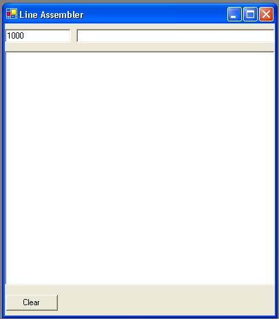

The line assembler is used to assemble short programs directly into memory. To use the line assembler enter the hex address you want to start assembling at in the upper left text box. Next enter the line to assemble in the box next to the address and press enter to assemble it. If there are no errors in the line, it will be assembled, will show up in the list and the address will be incremented. You can continue entering as many lines as you like in this way. To clear the main box click the clear button. This will only clear the display of the lines you entered not the actual data from memory.
Lines should be entered in the following format:
OPCODE OPERAND
For example:
LDA #$55
Operand values an be entered in 1 of 4 numeric bases as follows:
10 - Decimal
$10 - Hex
O10 - Octal
%10101010 - Binary